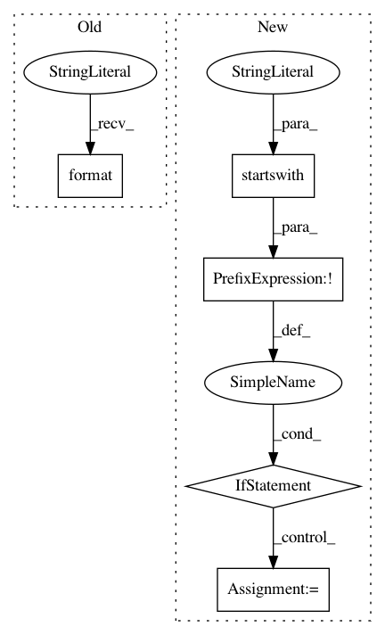

b2fbf435a7158a02c8199015e0c8a8a794c02f56,src/python/pants/auth/basic_auth.py,BasicAuth,authenticate,#BasicAuth#Any#Any#Any#,36
Before Change
auth = None // requests will use the netrc creds.
response = requests.get(url, auth=auth)
if response.status_code != requests.codes.ok:
raise BasicAuthException("Failed to auth against {}. Status code {}.".format(
response, response.status_code))
cookies.update(response.cookies)
After Change
url = provider_config.get("url")
if not url:
raise BasicAuthException("No url found in config for provider {}.".format(provider))
if not self.get_options().allow_insecure_urls and not url.startswith("https://"):
raise BasicAuthException("Auth url for provider {} is not secure: {}.".format(provider, url))
if creds:
auth = requests.auth.HTTPBasicAuth(creds.username, creds.password)
else:
auth = None // requests will use the netrc creds.
response = requests.get(url, auth=auth)
if response.status_code != requests.codes.ok:
if response.status_code == requests.codes.unauthorized:
parsed = www_authenticate.parse(response.headers.get("WWW-Authenticate", ""))
if "Basic" in parsed:
raise Challenged(url, response.status_code, response.reason, parsed["Basic"]["realm"])
raise BasicAuthException(url, response.status_code, response.reason)
In pattern: SUPERPATTERN
Frequency: 3
Non-data size: 5
Instances
Project Name: pantsbuild/pants
Commit Name: b2fbf435a7158a02c8199015e0c8a8a794c02f56
Time: 2018-10-03
Author: benjyw@gmail.com
File Name: src/python/pants/auth/basic_auth.py
Class Name: BasicAuth
Method Name: authenticate
Project Name: has2k1/plotnine
Commit Name: 565bfe890fa85b433bf1be04189212000b3cd327
Time: 2016-04-13
Author: has2k1@gmail.com
File Name: ggplot/stats/stat.py
Class Name: stat
Method Name: __radd__
Project Name: has2k1/plotnine
Commit Name: 565bfe890fa85b433bf1be04189212000b3cd327
Time: 2016-04-13
Author: has2k1@gmail.com
File Name: ggplot/geoms/geom.py
Class Name: geom
Method Name: _make_stat